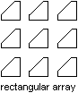

Autodesk AutoCAD 2021: ActiveX Developer's Guide > Create and Edit AutoCAD Entities > About Modifying Objects (VBA/ActiveX) >
To create a 2D or 3D rectangular array, use the ArrayRectangular method provided for that object.
This method requires you to provide the number of rows, number of columns, distance between rows, and distance between columns. When creating a 3D array, you must also specify the number of levels and distance between levels as well.
A rectangular array is constructed by replicating the object in the selection set the appropriate number of times. If you define one row, you must specify more than one column and vice versa.
The original object is assumed to be in the lower-left corner, and the array is generated up and to the right. If the distance between rows is a negative number, rows are added downward. If the distance between columns is a negative number, the columns are added to the left.

AutoCAD builds the rectangular array along a baseline defined by the current snap rotation angle. This angle is 0 by default, so the rows and columns of a rectangular array are orthogonal with respect to the X and Y drawing axes. You can change this angle and create a rotated array by setting the snap rotation angle to a nonzero value. To do this, use the SnapRotationAngle property.
This example creates a circle and then performs a rectangular array of the circle, creating five rows and five columns of circles.
Sub Ch4_ArrayRectangularExample()
' Create the circle
Dim circleObj As AcadCircle
Dim center(0 To 2) As Double
Dim radius As Double
center(0) = 2#: center(1) = 2#: center(2) = 0#
radius = 0.5
Set circleObj = ThisDrawing.ModelSpace.AddCircle(center, radius)
ZoomAll
' Define the rectangular array
Dim numberOfRows As Long
Dim numberOfColumns As Long
Dim numberOfLevels As Long
Dim distanceBwtnRows As Double
Dim distanceBwtnColumns As Double
Dim distanceBwtnLevels As Double
numberOfRows = 5
numberOfColumns = 5
numberOfLevels = 2
distanceBwtnRows = 1
distanceBwtnColumns = 1
distanceBwtnLevels = 1
' Create the array of objects
Dim retObj As Variant
retObj = circleObj.ArrayRectangular _
(numberOfRows, numberOfColumns, numberOfLevels, _
distanceBwtnRows, distanceBwtnColumns, distanceBwtnLevels)
ZoomAll
End Sub